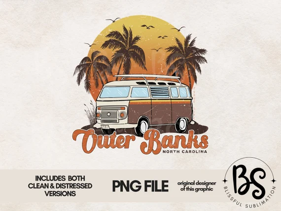

<!DOCTYPE html>
<html lang="en">
<head>
    <meta charset="UTF-8">
    <meta name="viewport" content="width=device-width, initial-scale=1.0">
    <title>OUTERBANKS</title>
</head>
<body>

</body>
</html>
<section id="OUTER BANKS" class="my-5 pt 6 secao-SARAH WEB" tabindex="0"
aria-label="=seção explicativa sobre a tropicalia">
<div class="container d flex align-items-center">
<div class="col-4 d-flex fustify-content-center">
    
<div class=”col-5”>

<h2>outer banks sinopse</h2>
<p class=”p-2”>"O jovem John convoca seus melhores amigos para procurarem
     por um tesouro ligado ao desaparecimento de seu pai. Aos poucos, o grupo vai 
     entrando em uma perigosa trama de segredos e perigos.
    

</div>
</div>
</section>
<section id="inicio" class="my-5"
<div class="inicio-fundo d-flex justify-content-between align-items-center">
<div class="esquerda-conteudo">
<hl class="display-4 text-black fst-italic fw-bold"> boas-vindas a <h1</hl>

<a href="#mordenismo"
class="=btn btn-primary btn-lg botao-inicio fw semibold">quero assistir!</a>
</div>

</section>


